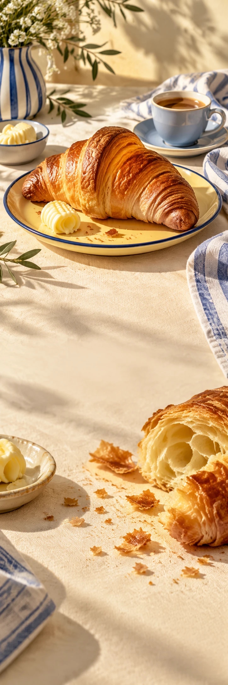

BUTTER DAYS
BakkerijWeekendcampagne
YOUR WEEKEND, BUTTERED
CRUMBS
WELCOME.
Plannen voor vandaag? Begin hier.
Goudbruin van buiten. Luchtig van binnen. Een croissant, koffie en een tafel waar nog wel iemand bij kan. Dat is ons idee van een goede ochtend.
Bekijk de bakkerijMaak ruimte
voor kruimels.
Plannen voor vandaag? Begin hier.
Bekijk de bakkerij